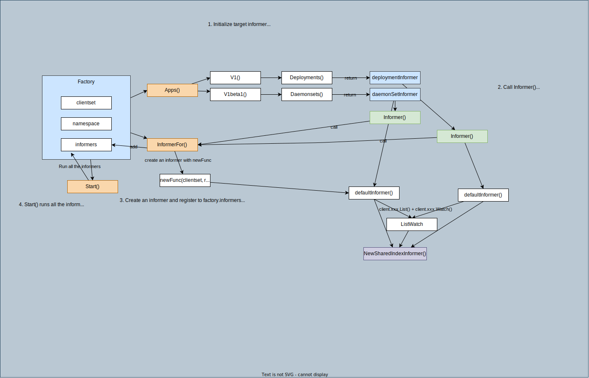

informer
Overview
Factory & Informers

Single Informer

Informer monitors the changes of target resource. An informer is created for each of the target resources if you need to handle multiple resources (e.g. podInformer, deploymentInformer).
types
Interface SharedInformerFactory
type SharedInformerFactory interface {
internalinterfaces.SharedInformerFactory
ForResource(resource schema.GroupVersionResource) (GenericInformer, error)
WaitForCacheSync(stopCh <-chan struct{}) map[reflect.Type]bool
Admissionregistration() admissionregistration.Interface
Internal() apiserverinternal.Interface
Apps() apps.Interface
Autoscaling() autoscaling.Interface
Batch() batch.Interface
Certificates() certificates.Interface
Coordination() coordination.Interface
Core() core.Interface
Discovery() discovery.Interface
Events() events.Interface
Extensions() extensions.Interface
Flowcontrol() flowcontrol.Interface
Networking() networking.Interface
Node() node.Interface
Policy() policy.Interface
Rbac() rbac.Interface
Scheduling() scheduling.Interface
Storage() storage.Interface
}
Implementation sharedInformerFactory
type sharedInformerFactory struct {
client kubernetes.Interface
namespace string
tweakListOptions internalinterfaces.TweakListOptionsFunc
lock sync.Mutex
defaultResync time.Duration
customResync map[reflect.Type]time.Duration
informers map[reflect.Type]cache.SharedIndexInformer
// startedInformers is used for tracking which informers have been started.
// This allows Start() to be called multiple times safely.
startedInformers map[reflect.Type]bool
}
Fields:
client: clientset to interact with API servernamespace: you can specify a namespace or all namespaces (v1.NamespaceAll) by defaultinformers: store created informers to start them whenfactory.Startis called.
Methods: Get group's interface (e.g. Apps()) which returns version interface, and eventually you can get the corresponding informer.
How a new informer is created with a Factory: 1. Create a factory.
kubeInformerFactory := kubeinformers.NewSharedInformerFactory(kubeClient, time.Second*30)
Deployment)
```go
deploymentInformer := kubeInformerFactory.Apps().V1().Deployments()
```
1. [kubeInformerFactory.Apps()](https://github.com/kubernetes/client-go/blob/v0.25.1/informers/factory.go#L220) returns `apps.New(f, f.namespace, f.tweakListOptions)`
1. [apps.New(f, f.namespace, f.tweakListOptions)](https://github.com/kubernetes/client-go/blob/v0.25.0/informers/apps/interface.go#L45) returns `&group{factory: f, namespace: namespace, tweakListOptions: tweakListOptions}`
1. `kubeInformerFactory.Apps()` is `&group`.
1. `kubeInformerFactory.Apps().V1()` is `group.V1()` and [group.V1()](https://github.com/kubernetes/client-go/blob/v0.25.0/informers/apps/interface.go#L50) returns `v1.New(g.factory, g.namespace, g.tweakListOptions)`
1. [v1.New](https://github.com/kubernetes/client-go/blob/v0.25.0/informers/apps/v1/interface.go#L46) returns `&version{factory: f, namespace: namespace, tweakListOptions: tweakListOptions}`
1. `kubeInformerFactory.Apps().V1()` is `&version`.
1. `kubeInformerFactory.Apps().V1().Deployments()` is `&version` and [version.Deployments()](https://github.com/kubernetes/client-go/blob/v0.25.0/informers/apps/v1/interface.go#L61) returns `&deploymentInformer{factory: v.factory, namespace: v.namespace, tweakListOptions: v.tweakListOptions}`.
1. [deploymentInformer](https://github.com/kubernetes/client-go/blob/v0.25.0/informers/apps/v1/deployment.go#L42)
Note that there's nothing happening but just creating `deploymentInformer` at this moment.
-
Pass the informer to a controller. Example:
go NewController( deploymentInformer, ... )- Inside the controller, call
deploymentInformer.Informer().AddEventHandler(..)e.g. sample-controller/blob/v0.0.6/controller.go#L102 - deploymentInformer.Informer() returns
f.factory.InformerFor(&appsv1.Deployment{}, f.defaultInformer) - factory.InformerFor create a new informer and register it to
factory.informers<- This is the moment the new informer is created!!informer = newFunc(f.client, resyncPeriod) f.informers[informerType] = informernewFunc = defaultInformerin this example. (defaultInformeris defined each informer) e.g. deploymentInformer.defaultInformerfunc NewFilteredDeploymentInformer(client kubernetes.Interface, namespace string, resyncPeriod time.Duration, indexers cache.Indexers, tweakListOptions internalinterfaces.TweakListOptionsFunc) cache.SharedIndexInformer { return cache.NewSharedIndexInformer( &cache.ListWatch{ ListFunc: func(options metav1.ListOptions) (runtime.Object, error) { if tweakListOptions != nil { tweakListOptions(&options) } return client.AppsV1().Deployments(namespace).List(context.TODO(), options) }, WatchFunc: func(options metav1.ListOptions) (watch.Interface, error) { if tweakListOptions != nil { tweakListOptions(&options) } return client.AppsV1().Deployments(namespace).Watch(context.TODO(), options) }, }, &appsv1.Deployment{}, resyncPeriod, indexers, ) }
- Inside the controller, call
-
Start factory.
kubeInformerFactory.Start(stopCh)- factory.Start() run all the informers in the factory by
informer.Run(stopCh)
- factory.Start() run all the informers in the factory by
-
informer.Run: you can reference below
Interface SharedInformer
- Interface:
SharedInformer
SharedIndexInformer
type SharedInformer interface { AddEventHandler(handler ResourceEventHandler) AddEventHandlerWithResyncPeriod(handler ResourceEventHandler, resyncPeriod time.Duration) GetStore() Store GetController() Controller Run(stopCh <-chan struct{}) HasSynced() bool LastSyncResourceVersion() string SetWatchErrorHandler(handler WatchErrorHandler) error SetTransform(handler TransformFunc) error }type SharedIndexInformer interface { SharedInformer // AddIndexers add indexers to the informer before it starts. AddIndexers(indexers Indexers) error GetIndexer() Indexer }
Implementation sharedIndexInformer
type sharedIndexInformer struct {
indexer Indexer
controller Controller
processor *sharedProcessor
cacheMutationDetector MutationDetector
listerWatcher ListerWatcher
objectType runtime.Object
resyncCheckPeriod time.Duration
defaultEventHandlerResyncPeriod time.Duration
clock clock.Clock
started, stopped bool
startedLock sync.Mutex
blockDeltas sync.Mutex
watchErrorHandler WatchErrorHandler
transform TransformFunc
}
- Create DeltaFifo by NewDeltaFIFOWithOptions
- Create Controller with New
- Run s.cacheMutationDetector.Run
- Run
s.processor.run<- start all listeners. listeners are added viaAddEventHandler. (usually withcache.ResourceEventHandlerFuncs{AddFunc: xx, UpdateFunc: xx, DeleteFunc: xx}) - Run s.controller.Run <- refer the controller section 1. Create a new Reflector and call r.Run (ListAndWatch is called inside)
NewSharedInformer:
- NewSharedInformer: call NewSharedIndexInformer with
Indexers{}.NewSharedIndexInformer(lw, exampleObject, defaultEventHandlerResyncPeriod, Indexers{}) - NewSharedIndexInformer
func NewSharedIndexInformer(lw ListerWatcher, exampleObject runtime.Object, defaultEventHandlerResyncPeriod time.Duration, indexers Indexers) SharedIndexInformer { realClock := &clock.RealClock{} sharedIndexInformer := &sharedIndexInformer{ processor: &sharedProcessor{clock: realClock}, indexer: NewIndexer(DeletionHandlingMetaNamespaceKeyFunc, indexers), listerWatcher: lw, objectType: exampleObject, resyncCheckPeriod: defaultEventHandlerResyncPeriod, defaultEventHandlerResyncPeriod: defaultEventHandlerResyncPeriod, cacheMutationDetector: NewCacheMutationDetector(fmt.Sprintf("%T", exampleObject)), clock: realClock, } return sharedIndexInformer }
sharedProcessor
Role: hold a collection of listeners and distribute a notification object to those listeners.
type sharedProcessor struct {
listenersStarted bool
listenersLock sync.RWMutex
listeners []*processorListener
syncingListeners []*processorListener
clock clock.Clock
wg wait.Group
}
Listenersare added for ResourceEventHandler via AddEventHandlerdistribute()callslistener.addto propagate new events to each listener.distribute()is called byinformer.OnAdd,informer.OnUpdate, andinformer.OnDeleterun()callslistener.runandlistener.popfor all listeners.handler.OnAdd,handler.OnUpdate,handler.OnDeletebased on the notification type.
Controller
Role: Run a reflector and enqueue item to Queue from ListerWatcher and process item from the queue with processfunc.
Interface:
// Controller is a low-level controller that is parameterized by a
// Config and used in sharedIndexInformer.
type Controller interface {
// Run does two things. One is to construct and run a Reflector
// to pump objects/notifications from the Config's ListerWatcher
// to the Config's Queue and possibly invoke the occasional Resync
// on that Queue. The other is to repeatedly Pop from the Queue
// and process with the Config's ProcessFunc. Both of these
// continue until `stopCh` is closed.
Run(stopCh <-chan struct{})
// HasSynced delegates to the Config's Queue
HasSynced() bool
// LastSyncResourceVersion delegates to the Reflector when there
// is one, otherwise returns the empty string
LastSyncResourceVersion() string
}
Implementation:
type controller struct {
config Config
reflector *Reflector
reflectorMutex sync.RWMutex
clock clock.Clock
}
- Most things are passed by
Config(ListerWatcher, ObjectType, Queue (FifoDeltaQueue))
Run:
- Create a Reflector with NewReflector(lw ListerWatcher, expectedType interface{}, store Store, resyncPeriod time.Duration)
- Run
reflector.Run(details -> ref reflector)ListAndWatchwatchHandler:- event.Added -> store.Add
- event.Modified -> store.Update
- event.Deleted -> store.Delete (store = Queue)
- Run processLoop every second.
- Pop item from the Queue and process it repeatedly. (Actual process is given by
Config.Process, controller is just a container to executeProcess)Config.Process: HandleDeltasHandleDeltascalls processDeltas(s, s.indexer, s.transform, deltas)handler: sharedIndexInformerclientState: s.indexer
- Keep indexer up-to-date by calling
indexer.Update(),indexer.Add(),indexer.Delete(). - Distribute notification and add object to cacheMutationDetector by calling
sharedIndexInformer.OnUpdate(),sharedIndexInformer.OnAdd(),sharedIndexInformer.OnDelete()
- Pop item from the Queue and process it repeatedly. (Actual process is given by
MutationDetector
Role: Check if a cached object is mutated. Call failurefunc or panic if mutated.
- By default, mutation detector is not enabled. (You can skip this components)
var mutationDetectionEnabled = false func init() { mutationDetectionEnabled, _ = strconv.ParseBool(os.Getenv("KUBE_CACHE_MUTATION_DETECTOR")) } - Run periodically calls CompareObjects.
- CompareObjects compares
cachedandcopiedofcacheObjind.cachedObjsandd.retainedCachedObjs.type cacheObj struct { cached interface{} copied interface{} } - If any object is altered, call
failureFunc. (if created with NewCacheMutationDetector, it doesn't have failureFunc, the program goespanic) - AddObject adds an object to
d.addedObjs. - Test: you can enable mutation detector and you'll get error
panic: cache *v1.Pod modified.KUBE_CACHE_MUTATION_DETECTOR=true go run informer.go
Example
- Initialize clientset with
.kube/config - Create an informer factory with the following line.
The second argument specifies ResyncPeriod, which defines the interval of resync (The resync operation consists of delivering to the handler an update notification for every object in the informer's local cache). For more detail, please read NewSharedInformer
informerFactory := informers.NewSharedInformerFactory(kubeClient, time.Second*30) -
Create an informer for Pods, which watches Pod's changes.
podInformer := informerFactory.Core().V1().Pods()factory -> group -> version -> kind
type PodInformer interface { Informer() cache.SharedIndexInformer Lister() v1.PodLister }Informer()returnsSharedIndexInformer- call
f.factory.InformerFor(&corev1.Pod{}, f.defaultInformer) - create new informer with NewFilteredPodInformer if not exist
- return the informer
- call
Lister()returns PodLister- call
v1.NewPodLister(f.Informer().GetIndexer()) - NewPodLister returns podLister with the given indexer.
type podLister struct { indexer cache.Indexer }
- call
-
Add event handlers (
AddFunc,UpdateFunc, andDeleteFunc) to the pod informer.podInformer.Informer().AddEventHandler( cache.ResourceEventHandlerFuncs{ AddFunc: handleAdd, UpdateFunc: handleUpdate, DeleteFunc: handleDelete, }, )handleAdd,handleUpdate, andhandleDeletedefine custom logic for each event. In this example, just print"handleXXX is called" -
Create a stop channel and start the factory.
ch := make(chan struct{}) // stop channel informerFactory.Start(ch) -
Wait until the cache is synced.
cacheSynced := podInformer.Informer().HasSynced if ok := cache.WaitForCacheSync(ch, cacheSynced); !ok { log.Printf("cache is not synced") } log.Println("cache is synced")func WaitForCacheSync(stopCh <-chan struct{}, cacheSyncs ...InformerSynced) bool { err := wait.PollImmediateUntil(syncedPollPeriod, func() (bool, error) { for _, syncFunc := range cacheSyncs { if !syncFunc() { return false, nil } } return true, nil }, stopCh) if err != nil { klog.V(2).Infof("stop requested") return false } klog.V(4).Infof("caches populated") return true }// ContextForChannel derives a child context from a parent channel. // // The derived context's Done channel is closed when the returned cancel function // is called or when the parent channel is closed, whichever happens first. // // Note the caller must *always* call the CancelFunc, otherwise resources may be leaked. func ContextForChannel(parentCh <-chan struct{}) (context.Context, context.CancelFunc) { ctx, cancel := context.WithCancel(context.Background()) go func() { select { case <-parentCh: cancel() case <-ctx.Done(): } }() return ctx, cancel } -
Run
runfunction every 10 secondsgo wait.Until(run, time.Second*10, ch) <-ch
Run and check
-
Run
go run informer.go -
All Pods are synced in the cache.
1. Create a2021/12/21 09:05:08 handleAdd is called for Pod (key: local-path-storage/local-path-provisioner-547f784dff-lhwfk) 2021/12/21 09:05:08 handleAdd is called for Pod (key: kube-system/kube-scheduler-kind-control-plane) 2021/12/21 09:05:08 handleAdd is called for Pod (key: kube-system/etcd-kind-control-plane) 2021/12/21 09:05:08 handleAdd is called for Pod (key: kube-system/kube-apiserver-kind-control-plane) 2021/12/21 09:05:08 handleAdd is called for Pod (key: kube-system/kindnet-nzc7p) 2021/12/21 09:05:08 handleAdd is called for Pod (key: kube-system/coredns-558bd4d5db-b4wjg) 2021/12/21 09:05:08 handleAdd is called for Pod (key: kube-system/kube-controller-manager-kind-control-plane) 2021/12/21 09:05:08 handleAdd is called for Pod (key: kube-system/kube-proxy-vrcbc) 2021/12/21 09:05:08 handleAdd is called for Pod (key: kube-system/coredns-558bd4d5db-8q78s) 2021/12/21 09:05:08 handleAdd is called for Pod (key: default/foo-sample-688594b488-782kw) 2021/12/21 09:05:08 cache is synced 2021/12/21 09:05:08 runPodwith namenginx.1. Handlers are called by the events of the createdkubectl run nginx --image=nginxPod.1. Delete the2021/12/21 09:05:18 run 2021/12/21 09:05:20 handleAdd is called for Pod (key: default/nginx) 2021/12/21 09:05:20 handleUpdate is called for Pod (key: default/nginx) 2021/12/21 09:05:20 handleUpdate is called for Pod (key: default/nginx)Pod1. Handlers are called by the events of the Pod deletion.kubectl delete po nginx1.2021/12/21 09:05:29 handleUpdate is called for Pod (key: default/nginx) 2021/12/21 09:05:30 handleUpdate is called for Pod (key: default/nginx) 2021/12/21 09:05:31 handleUpdate is called for Pod (key: default/nginx) 2021/12/21 09:05:31 handleUpdate is called for Pod (key: default/nginx) 2021/12/21 09:05:31 handlDelete is called for Pod (key: default/nginx)runfunction is called every 10 seconds.1. The cached is resynced every 30 seconds.2021/12/21 09:26:08 run 2021/12/21 09:26:18 run 2021/12/21 09:26:28 run2021/12/21 09:27:08 handleUpdate is called for Pod (key: local-path-storage/local-path-provisioner-547f784dff-lhwfk) 2021/12/21 09:27:08 handleUpdate is called for Pod (key: kube-system/kube-apiserver-kind-control-plane) 2021/12/21 09:27:08 handleUpdate is called for Pod (key: kube-system/coredns-558bd4d5db-b4wjg) 2021/12/21 09:27:08 handleUpdate is called for Pod (key: kube-system/kube-controller-manager-kind-control-plane) 2021/12/21 09:27:08 handleUpdate is called for Pod (key: kube-system/coredns-558bd4d5db-8q78s) 2021/12/21 09:27:08 handleUpdate is called for Pod (key: default/foo-sample-688594b488-782kw) 2021/12/21 09:27:08 handleUpdate is called for Pod (key: kube-system/kube-scheduler-kind-control-plane) 2021/12/21 09:27:08 handleUpdate is called for Pod (key: kube-system/etcd-kind-control-plane) 2021/12/21 09:27:08 handleUpdate is called for Pod (key: kube-system/kindnet-nzc7p) 2021/12/21 09:27:08 handleUpdate is called for Pod (key: kube-system/kube-proxy-vrcbc)